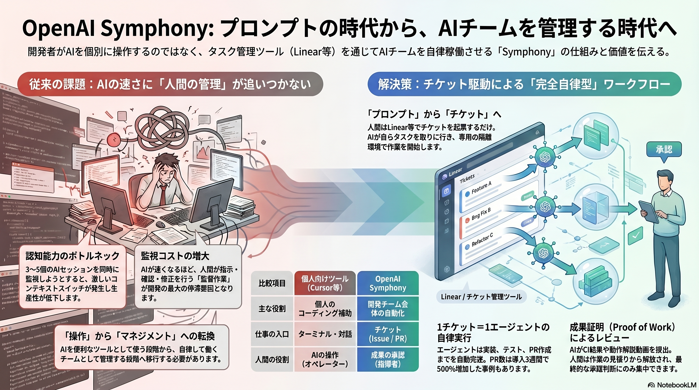
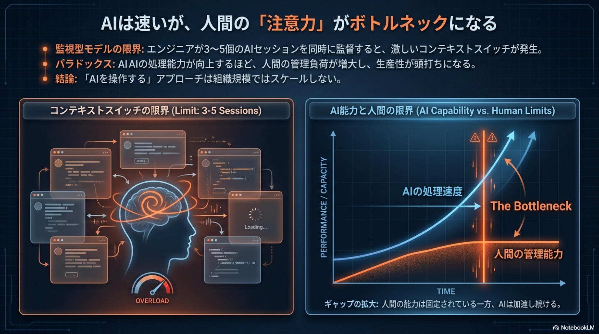
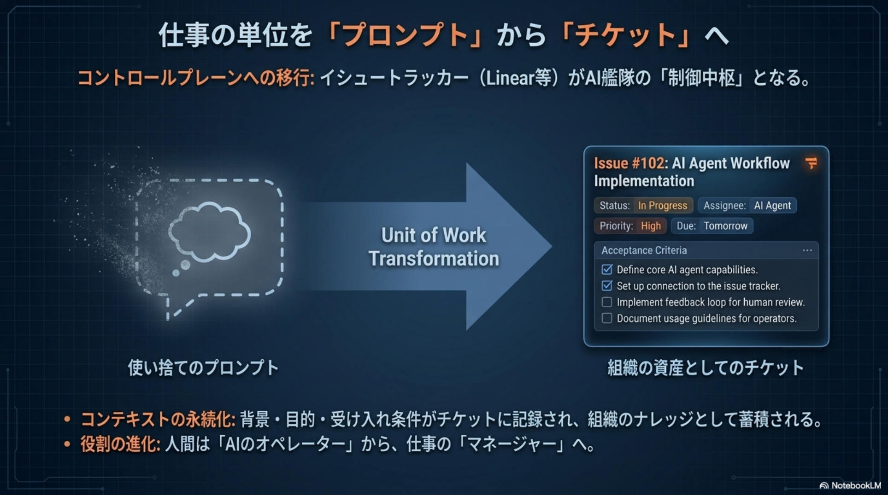
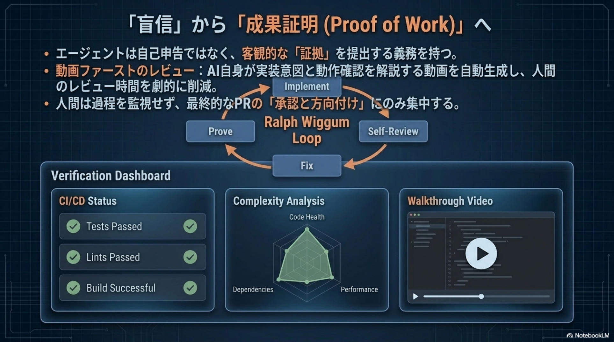
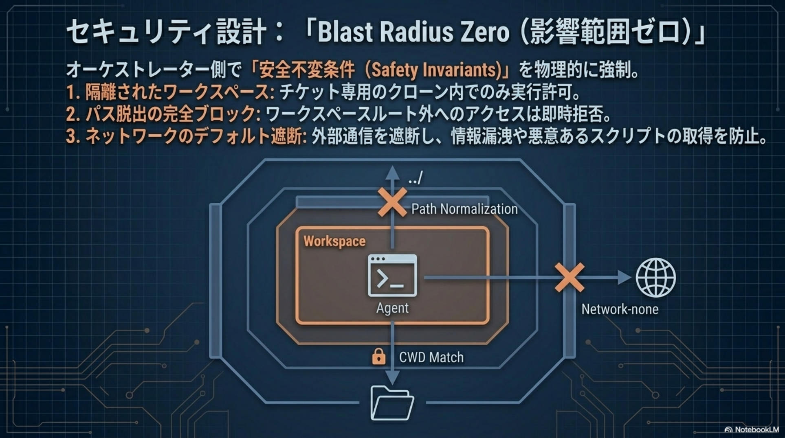
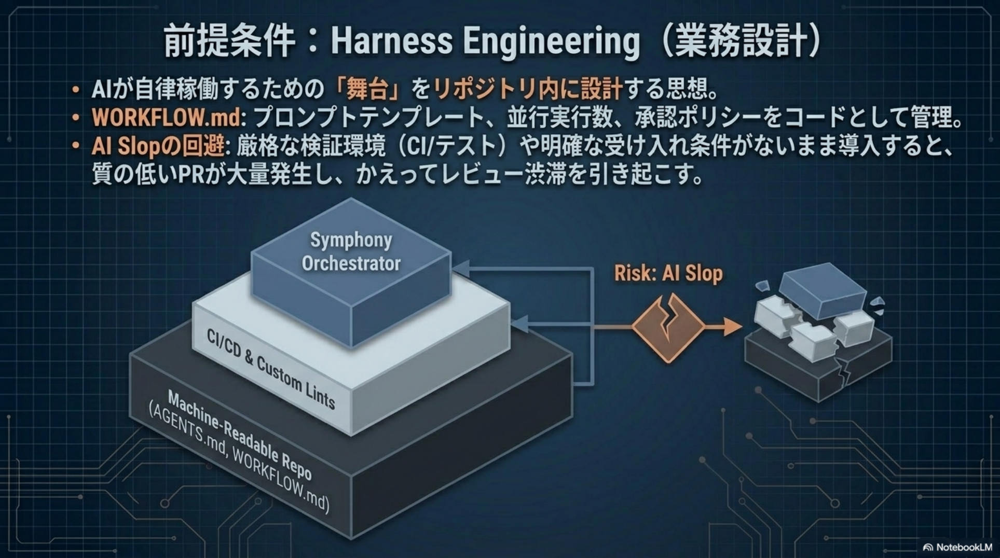
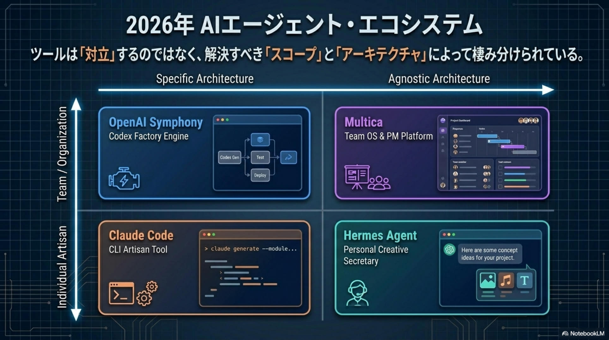
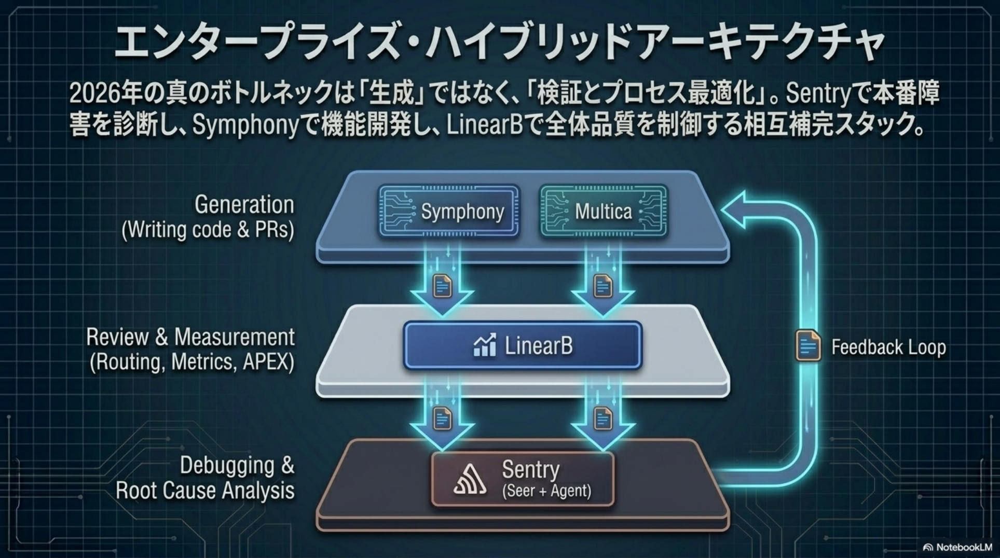
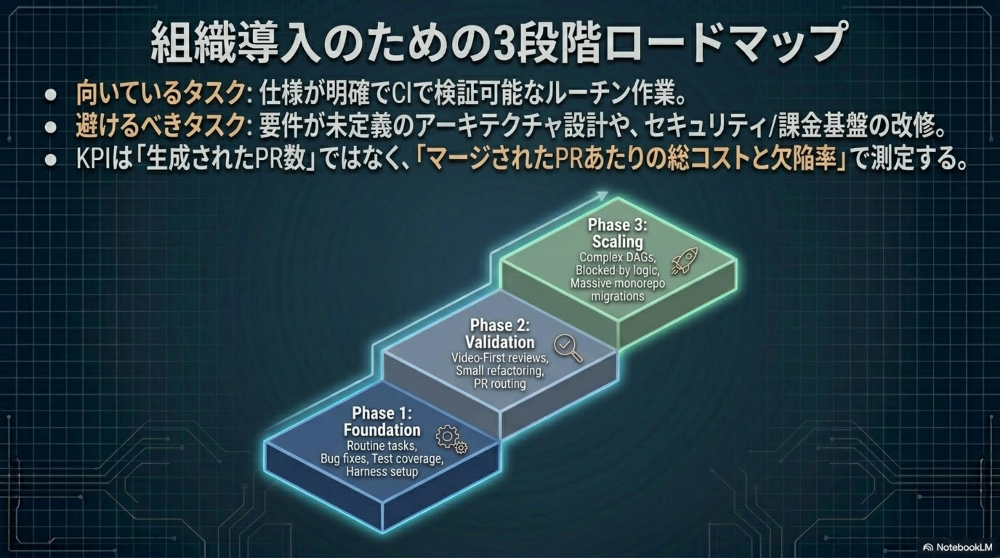
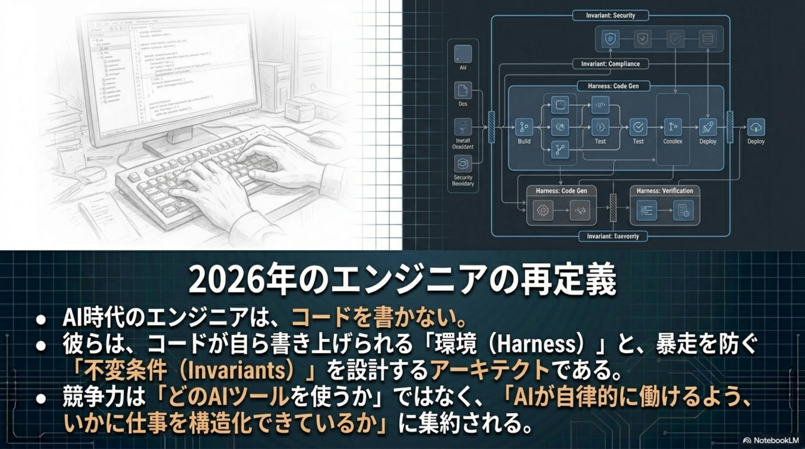

戦略プレイブック 2026 · No. 04/29
「AI操作」から「AIマネジメント」へ。
OpenAI Symphony と自律型エージェントの夜明け。
エンジニアが個別 AI を操作する時代から、タスク管理ツール (Linear 等) 経由で AI チームを自律稼働させる「Symphony」の時代へ。Codex を Issue 単位で並列運用するためのオープンソース仕様。
同日には OpenAI × Microsoft の契約再改定、AWS での OpenAI 製品提供開始、Claude Cowork Live Artifact、HuggingFace の中華モデル躍進。AI を「運用」する段階への大移動が一斉に始まっている。
全体図 · 1枚で読む Symphony
OpenAI Symphony を 1 枚で読む — プロンプト時代から、AI チーム管理時代へ。
左に従来の課題（人間の管理が追いつかない）、右に解決策（チケット駆動の完全自律型ワークフロー）、下に個人ツール（Cursor 等）と Symphony の比較。読み手はここで全体構造を掴んでから、各章の詳細へ進める。

OVERVIEW / 「AI 操作」から「AI マネジメント」への移行構造を 1 枚に集約。
課題 · 注意力ボトルネック
AI は速いが、人間の「注意力」がボトルネックになる。
エンジニアが 3〜5 個の AI セッションを同時に監督すると、激しいコンテキストスイッチが発生する。AI の処理能力が向上するほど、人間の管理負荷が増大して生産性が頭打ちになる ── この 監視型パラドックス こそが、組織規模で AI がスケールしない真の理由。
監視型モデルの限界
3〜5 セッションで認知が破綻
エンジニアが同時並列で AI を監督すると、コンテキストスイッチで生産性が一気に落ちる。これが 戦略的上限 (Strategic Ceiling)。
パラドックス
AI が速くなるほど、人間が詰まる
AI の処理速度は加速し続ける一方で、人間の管理能力は固定。ギャップが拡大するほど、AI の加速がむしろ生産性の足かせになる。
結論
「AI を操作する」は組織でスケールしない
「AI をマネジメントする」段階に移行しない限り、組織規模では AI の加速を捌き切れない。Symphony はそこを設計し直す。

SLIDE 02 · 戦略プレイブック原典より ── コンテキストスイッチの限界 (Limit: 3-5 Sessions) と AI Capability vs Human Limits の交差点が「The Bottleneck」
転換 · 仕事の単位
仕事の単位を「プロンプト」から「チケット」へ。
コントロールプレーンへの移行 ── イシュートラッカー (Linear 等) が AI 艦隊の 制御中枢 となる。AI への依頼は使い捨てのチャットから、組織のワークフローに統合された持続的タスクへと転換する。
旧 · プロンプト型 (個人操作)
使い捨てのプロンプト
仕事の入口は都度の指示。基準も履歴もユーザーの頭の中にあり、組織には残らない。
- 仕事の入口は都度の指示
- その場限りの「使い捨て」
- 人間は AI のオペレーター（操作者）
→
新 · チケット型 (Symphony)
組織の資産としてのチケット
背景・目的・受け入れ条件・優先度・レビュー履歴を持つ「組織の仕事の単位」。AI はチームメンバーとして参加する。
- 仕事の入口は
Issue tracker
- 背景・受け入れ条件を持つ組織資産
- 人間はマネージャー（指揮者）

SLIDE 03 · 戦略プレイブック原典より ── Issue #102 のサンプル: Status / Assignee: AI Agent / Priority / Acceptance Criteria を持つ組織資産としてのチケット
構造 · Symphony アーキテクチャ
Issue Tracker から PR 着地までを、人間の介在なしで完遂するパイプライン。
5 つのコンポーネントが連鎖し、データベース不要のインメモリ状態管理で 24時間365日 自動稼働する。
01
Issue Tracker
Linear · Polling 30s
常時監視。オープンな Issue を自動検知する。
02
Elixir Orchestrator
State Reconciliation
トラッカーとリポジトリの状態を自律的に一致させ、Dispatch する。
03
Workspace Manager
Per-Issue Git Clone
1 チケット = 1 隔離環境。タスクごとに動的生成。
04
Codex Agent
JSON-RPC over stdio · Continuous Turns
ヘッドレス制御で実装、テスト、修正を進める。
05
Landing
PR Creation
検証済みの成果物を Pull Request として人間に提出。
Always-Onデータベース不要のインメモリ状態管理。24時間365日、オープンな Issue を自動検知。
1 チケット = 1 隔離環境タスクごとに完全に独立したワークスペースを動的生成し、Blast Radius Zero を保証。
継続ターン初回プロンプト以降は文脈を保持し、自己完結でタスクを進行する。
証明 · Proof of Work
「盲信」から「成果証明 (Proof of Work)」へ。
エージェントは自己申告ではなく、客観的な「証拠」を提出する義務を持つ。人間は過程を監視せず、最終 PR の「承認と方向付け」にのみ集中する。動画ファーストのレビューで、人間のレビュー時間を劇的に削減する。
Step 1ImplementWORKFLOW.md に基づいて実装する。
Step 2Self-Review自分の差分を読み返し、欠陥を検知する。
Step 3FixCI / Lint エラーを自律修正する。
Step 4Prove証拠を束ねて Pull Request に提出する。
証拠 01
CI/CD Status
Tests · Lints · Build Successful
継続的インテグレーションによる自動テストの通過証明。受け入れ条件を機械的に満たしているか確認できる。
証拠 02
Complexity Analysis
Code Health · Performance · Dependencies
複雑度・型・依存関係に関する機械的レポート。レビュー前にリスクを可視化できる。
証拠 03
Walkthrough Video
AI 自身が実装意図を解説
動作確認を含む自動生成キャプチャ動画。差分を読まずとも、変更の意図が伝わる。
500%
3 週間で PR 着地数が 5 倍
OpenAI 内部パイロット (3-week internal pilot) の実績。真因は「変更1件あたりの知覚コスト (Perceived Cost of Change)」の劇的低下にある。

SLIDE 05 · 戦略プレイブック原典より ── Implement → Self-Review → Fix → Prove サイクルと、人間レビュー時間を削減する3種の客観証拠
安全 · Blast Radius Zero と業務設計
暴走を防ぐ 不変条件 (Safety Invariants) を、オーケストレーター側で物理的に強制する。
AI に自律性を与えるなら、同時に逃げ道を塞ぐアーキテクチャが必須。Symphony は 3 つの安全不変条件を構造的に強制する。
Barrier 01
隔離されたワークスペース
チケット専用のクローン内でのみ実行許可。メインコードベースや他のタスクから完全に切り離された専用サンドボックス。
Barrier 02
パス脱出の完全ブロック
絶対パス正規化 (Path Normalization) でワークスペース外への ../ アクセスを即時拒否。.ssh や .env 等の脱出を構造遮断。
Barrier 03
ネットワーク・デフォルト遮断
外部通信は network-none が基本。情報漏洩や不正スクリプト取得を防ぐ最小権限ネットワーク設計。
Harness Engineering ── AI が自律稼働するための「舞台」
リポジトリ自体を 機械可読 (Machine-Readable) な構造に再設計する。これが導入の絶対条件。
Symphony OrchestratorIssue 監視 · Workspace 生成 · Codex 起動を司る制御層
CI/CD & Custom Lints機械が自己検証するための絶対条件。AI Slop を防ぐ品質ゲート
Machine-Readable RepoAGENTS.md (規約・設計思想) + WORKFLOW.md (テンプレート・並行数・承認ポリシー)
⚠ 導入前リスク · AI Slop
厳格な検証環境 (CI / テスト) や明確な受け入れ条件がないまま導入すると、質の低い PR が大量発生し、かえって人間のレビューが渋滞する。準備不足の組織は ROI を悪化させる。

SLIDE 06 · Blast Radius Zero ── Workspace + CWD Match + Path Normalization + Network-none

SLIDE 07 · Harness Engineering ── Orchestrator / CI/CD & Lints / Machine-Readable Repo (AGENTS.md, WORKFLOW.md)
比較 · 2026 年 AI エージェント・エコシステム
ツールは「対立」するのではなく、解決すべきスコープとアーキテクチャによって棲み分けられている。
縦軸 = Team / Organization 〜 Individual Artisan、横軸 = Specific Architecture 〜 Agnostic Architecture。Symphony は左上 (組織 × 特化) に位置するスコープを持つ。
スコープ ↑
↓ 軸
Specific Architecture
(特化型)
Agnostic Architecture
(汎用型)
Team /
Organization
OpenAI Symphony
Codex Factory Engine
Linear を AI の脳にする。最小限のレイヤーで高信頼性を目指す特化型エンジン。Blast Radius Zero の隔離仕様。
Multica
Team OS & PM Platform
エージェントを本物の同僚に。解決策をチーム全体で蓄積・再利用する協働プラットフォーム (Reusable Skills DB)。
Individual
Artisan
Claude Code
CLI Artisan Tool
個人が IDE/CLI で対話しながら使う「職人ツール」。利便性と引き換えに高い権限 ── ユーザー側に多層防御の設計責任。
Hermes Agent
Personal Creative Secretary
永続記憶と自動スキル生成。TouchDesigner MCP 連携で 36 以上のクリエイティブツールを直接操作するパーソナル AI。

SLIDE 08 · 戦略プレイブック原典より ── Specific × Team で Symphony、Agnostic × Team で Multica、Specific × Individual で Claude Code、Agnostic × Individual で Hermes
構成 · エンタープライズ・ハイブリッド
2026年の真のボトルネックは「生成」ではなく 「検証とプロセス最適化」。
Symphony で機能開発し、LinearB で全体品質を制御し、Sentry で本番障害を診断する ── 競合ではなく 相互補完スタック。Symphony は新機能を作る「アクセル」、LinearB+Sentry は本番品質を守る「ブレーキとメーター」。
Generation
Writing code & PRs
OpenAI Symphony · Multica
Issue を起点に、Codex / Multi-agent でコードと PR を生成する。アクセル層。
Review & Measurement
Routing · Metrics · APEX
LinearB
AI コード品質測定と自動ルーティング。生成された PR を、適切なレビュアーやテストに振り分ける指揮層。
Debugging
Root Cause Analysis
Sentry (Seer + Agent)
本番バグの根本原因分析と修正提案。Feedback Loop で Generation 層へフィードバックを返す。

SLIDE 12 · 戦略プレイブック原典より ── Generation (Symphony+Multica) → Review & Measurement (LinearB) → Debugging (Sentry Seer+Agent) の Feedback Loop
経済 · TCO & ROI
OSS は無料だが、運用は無料ではない。最大のリスクは 業務設計コスト。
真の ROI は「変更1件あたりの知覚コスト」を劇的に下げること。これまで後回しにされていた技術的負債、リファクタリング、ドキュメント更新が非同期で処理可能に。
Layer 1 · LLMAPI: $1.09〜$6.30/タスク
Layer 2 · InfraCI Runtime · VM · ストレージ
Largest RiskLayer 3 · Harness業務設計コスト ── 最大の肝
500%
PR Increase (3-week internal pilot)
「変更1件あたりの知覚コスト低下」が真因。AI 実行費よりも、業務設計を怠ったレビュー渋滞の人件費が高くつく。
結論 · 2026年のエンジニアの再定義
AI 時代のエンジニアは、コードを書かない。
彼らは、コードが自ら書き上げられる「環境 (Harness)」と、暴走を防ぐ「不変条件 (Invariants)」を設計する アーキテクト である。組織導入のロードマップは、最初から全社自動化を狙わず Foundation → Validation → Scaling の順で進む。
Phase 1
Foundation
Routine tasks · Bug fixes · Test coverage · Harness setup
AI が読める Issue、SPEC、テスト、権限、ログを整える。まずは小さな低リスクタスクから。
Phase 2
Validation
Video-First reviews · Small refactoring · PR routing
1 チーム・1 リポジトリで試す。成果証明パケットとレビュー基準を固定する。
Phase 3
Scaling
Complex DAGs · Blocked-by logic · Massive monorepo migrations
対象 Issue を増やし、KPI は「生成された PR 数」ではなく「マージされた PR あたりの総コストと欠陥率」で測定する。
競争力は「どの AI ツールを使うか」ではなく、「AI が自律的に働けるよう、いかに仕事を構造化できているか」に集約される。プロンプトをこねくり回す時代は終わった。アーキテクチャとワークフローを設計する 「AIマネジメント」 へ移行せよ。
編集後記 · 2026-04-29

SLIDE 14 · Foundation → Validation → Scaling の3段階ロードマップ

SLIDE 15 · エンジニアの再定義 ── 「コードを書かない」アーキテクトへ